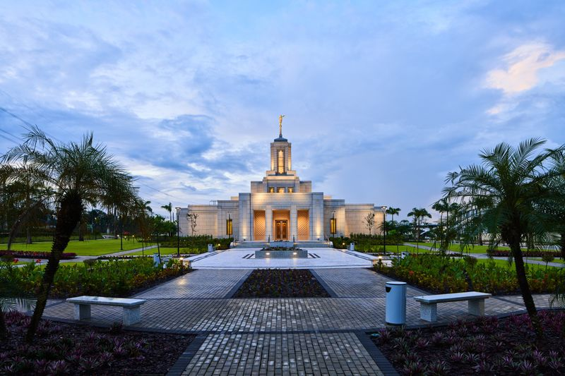
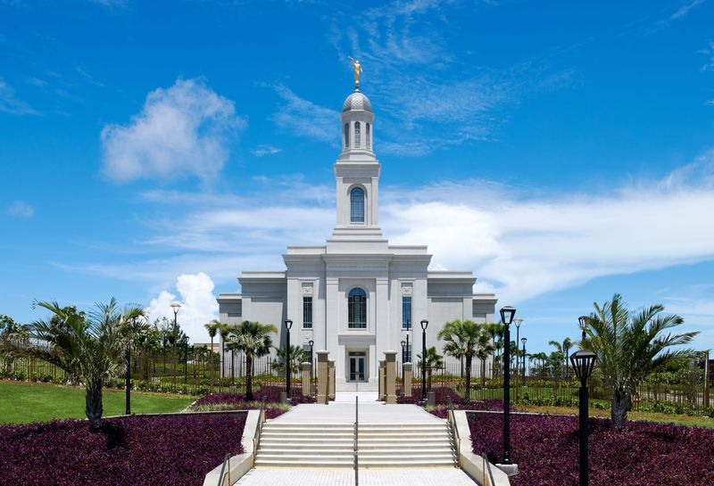
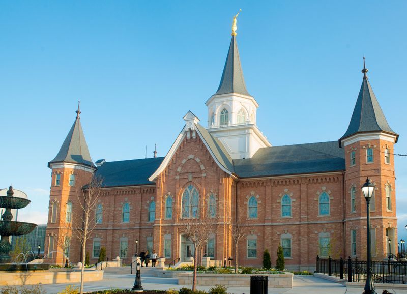
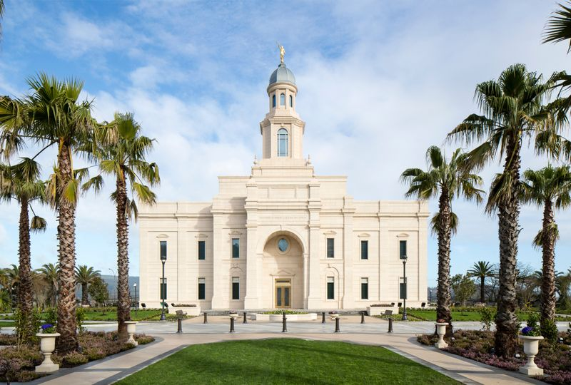
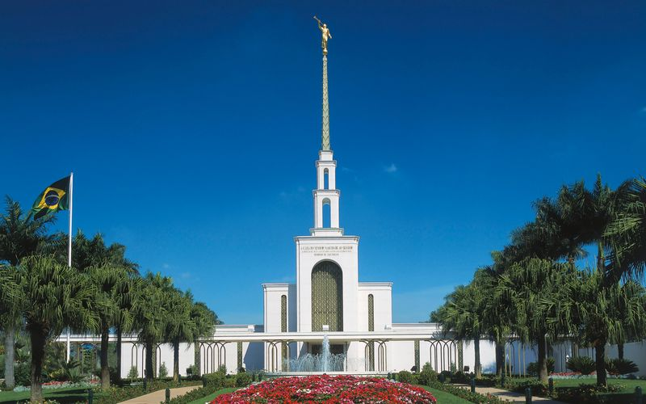
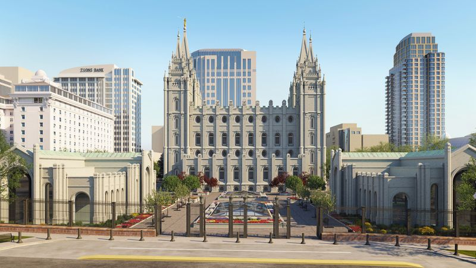
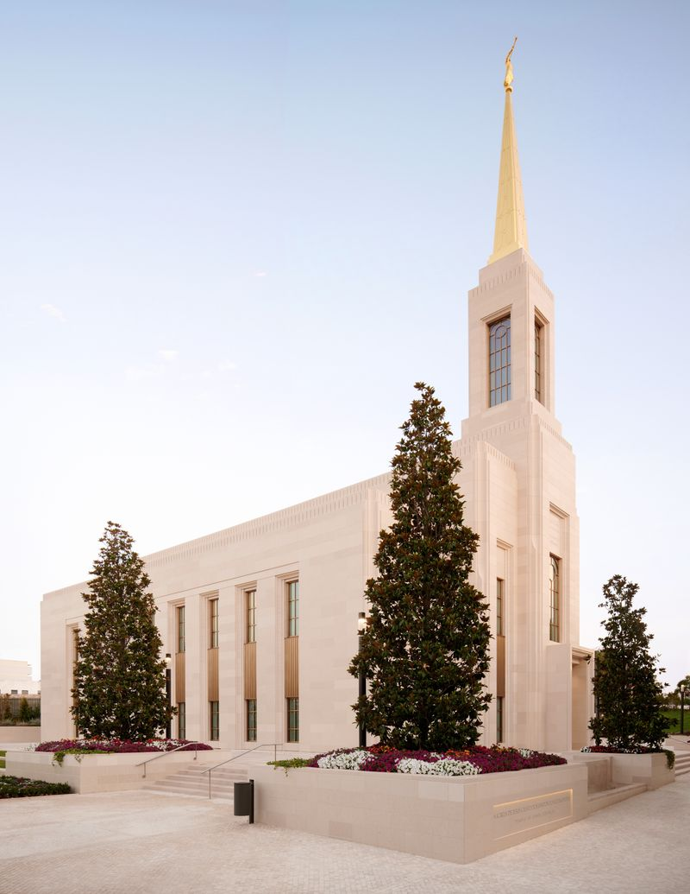

Álbum do Templo
☰
Página Inicial
Antigo
Novo
Grande
Pequeno
Página Inicial

Templo de Belém

Templo de Fortaleza
Templo de Roma

Templo de Provo

Templo de Concepcion

Templo de São Paulo

Templo de Salt Lake
Templo de Recife

Templo de Lisboa